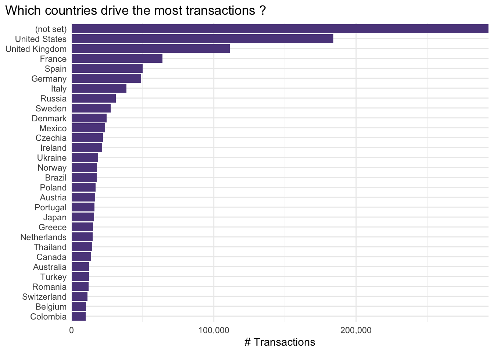

Code
medium_country_raw |>
filter(country == "Croatia") |>
arrange(desc(revenue)) |>
datatable()TODO: add links to most important sections below
In this section I will try to look at the medium_country data from a higher level - aggregated per country. I would like to see first an intro to the data, which countries drive the most users and revenue, try to identify a subset on which I can focus the analysis and lastly - try to give an advice to our client by just looking at this level.
The source file contains data on 240 countries in total and e.g. looks like this for Croatia
medium_country_raw |>
filter(country == "Croatia") |>
arrange(desc(revenue)) |>
datatable()The data is on country / medium level so I would like to collapse it down to just the country level grouping and compute some additional high-level metrics.
by_country <-
medium_country_raw |>
group_by(country) |>
summarise(
# summable-metrics
across(
c(users, new_users, sessions, transactions, revenue),
sum
),
# take medians for the rates, shares, durations
across(
c(bounce_rate, pages_session, avg_session_duration, ecommerce_conversion_rate),
median
)
) |>
ungroup() |>
# calculate new columns
mutate(
revenue_per_transaction = revenue / transactions,
new_users_share = new_users / users
)
by_country |>
filter(country == "Croatia") |>
mutate(across(is.numeric, ~ round(.x, 3))) |>
datatable(options = list(dom = 't'))Are there countries with very very low volume of users, transactions or revenue ?
I would pick users, transactions, revenue as most important metrics and look at their quantiles.
by_country |>
select(users, transactions, revenue) |>
map(quantile, probs = seq(0, 1, 0.05))$users
0% 5% 10% 15% 20% 25% 30%
2.00 74.50 385.00 568.50 974.80 1336.00 1786.10
35% 40% 45% 50% 55% 60% 65%
2479.10 3462.40 4153.70 7831.00 11915.15 18281.60 31478.55
70% 75% 80% 85% 90% 95% 100%
45452.50 72587.00 121966.20 256002.05 377302.90 824808.15 8390796.00
$transactions
0% 5% 10% 15% 20% 25% 30% 35%
0.00 2.00 7.90 11.70 23.80 33.00 42.80 58.65
40% 45% 50% 55% 60% 65% 70% 75%
83.20 106.55 168.00 274.25 395.40 642.50 1120.60 1936.00
80% 85% 90% 95% 100%
3442.80 6892.75 12443.30 21468.00 293169.00
$revenue
0% 5% 10% 15% 20% 25%
0.000 1010.094 3536.412 6083.276 11729.995 18284.208
30% 35% 40% 45% 50% 55%
25438.798 34884.987 47421.774 58671.711 78038.093 111281.571
60% 65% 70% 75% 80% 85%
156957.122 234950.814 385850.104 701653.123 901895.735 2206571.170
90% 95% 100%
3484899.314 5879185.640 83228820.262 Arguably these are random cut-off points that I just picked and make sense to me - such choices are definitely debatable. My goal is to reduce the noise in the data and focus on the bigger players where potential changes in the marketing strategy would make sense (e.g. compared to low volume countries where suggesting changes in the marketing strategy would have limited impact).
Based on this quick checks I am inclined to set some simple rules like
revenue <= 20,000 or users <= 1,000 or transactions <= 100
I can go back to revise this later if needed, in case there is still lots of noise or conversely i am missing some granularity, as well as look more into the lower revenue countries to see if there is something to be said for them separately. (TODO: link to appendix for this check ?)
The potentially-to-be-removed countries seem to be indeed small countries.
by_country |>
filter(
(revenue <= 20000) | (users <= 1000) | (transactions <= 100)
) |>
select(country, users:revenue) |>
arrange(desc(revenue)) |>
datatable()How many countries will be removed with this rule ? How much of the revenue do they contribute to ?
by_country |>
mutate(
too_low_volume = {
(revenue <= 20000) | (users <= 1000) | (transactions <= 100)
}
) |>
group_by(too_low_volume) |>
summarise(
n_countries = n(),
revenue = sum(revenue)
) |>
ungroup() |>
mutate(
perc_revenue = round(revenue / sum(revenue), 3),
perc_countries = round(n_countries / sum(n_countries), 3)
) |>
datatable(options = list(dom = 't'))I would be removing 104 countries ~43% of the total number but half a percent in terms of revenue. This seems ok to me (for now - perhaps to be revised later).
by_country <- by_country |>
filter(
(revenue > 20000) & (users > 1000) & (transactions > 100)
)I’m curious to see how the business of the client looks like more visually. I would like to plot the world in terms of buckets of revenue (split roughly and evenly in 7 buckets) in order to see how the “concentration” looks like.
125 codes from your data successfully matched countries in the map
11 codes from your data failed to match with a country code in the map
118 codes from the map weren't represented in your data
I expect the map to look very similar if we plot # of users, sessions or transactions instead.
Next I would like to take a look at the main “drivers” in terms of all the main metrics. I would like to make simple plots where countries would be ordered by their volume with respect to the main metrics.
by_country |>
slice_max(order_by = users, n = 30) |>
mutate(country = fct_reorder(country, users)) |>
ggplot(aes(x = users, y = country)) +
geom_col(fill = "mediumpurple4") +
scale_x_continuous(labels = comma_format(), expand = c(0, 0.3)) +
labs(
title = "Which countries drive the most users ?",
x = "# Users",
y = NULL
) +
theme_minimal() +
theme(plot.title.position = "plot")
by_country |>
slice_max(order_by = new_users, n = 30) |>
mutate(country = fct_reorder(country, new_users)) |>
ggplot(aes(x = new_users, y = country)) +
geom_col(fill = "mediumpurple4") +
scale_x_continuous(labels = comma_format(), expand = c(0, 0.3)) +
labs(
title = "Which countries drive the most new users ?",
x = "# New Users",
y = NULL
) +
theme_minimal() +
theme(plot.title.position = "plot")
by_country |>
slice_max(order_by = transactions, n = 30) |>
mutate(country = fct_reorder(country, transactions)) |>
ggplot(aes(x = transactions, y = country)) +
geom_col(fill = "mediumpurple4") +
scale_x_continuous(labels = comma_format(), expand = c(0, 0.3)) +
labs(
title = "Which countries drive the most transactions ?",
x = "# Transactions",
y = NULL
) +
theme_minimal() +
theme(plot.title.position = "plot")
by_country |>
slice_max(order_by = revenue, n = 30) |>
mutate(country = fct_reorder(country, revenue)) |>
ggplot(aes(x = revenue, y = country)) +
geom_col(fill = "mediumpurple4") +
scale_x_continuous(labels = comma_format(), expand = c(0, 0.3)) +
labs(
title = "Which countries drive the most revenue ?",
x = "€ Revenue",
y = NULL
) +
theme_minimal() +
theme(plot.title.position = "plot")
It seems that it is quite similar across the main metrics with the usual top countries driving the most (new) users, transactions and revenue.
However I noticed something interesting here:
I would like to check this in a bit more detail by ranking the countries with respect to these metrics and checking the difference in these ranks.
country_ranks <- by_country |>
mutate(
across(
c(users, transactions, revenue),
~ dense_rank(desc(.x)),
.names = "{col}_rank"
)
) |>
select(country, ends_with("rank")) |>
arrange(transactions_rank)
datatable(country_ranks)I would like to see which countries have either:
country_ranks |>
mutate(
ranks_diff = abs(users_rank - revenue_rank),
users_to_revenue_rank_ratio = users_rank / revenue_rank
) |>
filter(
(ranks_diff > 20) | (users_to_revenue_rank_ratio >= 2)
) |>
datatable()Indeed it seems there are some interesting cases here:
Once more i want to make sure Lithuania is unusual and compare against e.g. Germany
Comparing the ratio of users vs. ratio of revenue for Lithuania vs. Germany
compare_users <- by_country |>
filter(country %in% c("Lithuania", "Germany")) |>
select(country, users) |>
deframe()
compare_revenue <- by_country |>
filter(country %in% c("Lithuania", "Germany")) |>
select(country, revenue) |>
deframe()
c(
users = { comma_format()(compare_users) },
users_ratio = {
(compare_users["Lithuania"] / compare_users["Germany"]) |>
percent_format(accuracy = 0.1)()
},
revenue = { comma_format()(compare_revenue) },
revenue_ratio = {
(compare_revenue["Lithuania"] / compare_revenue["Germany"]) |>
percent_format(accuracy = 0.1)()
}
) users.Germany users.Lithuania users_ratio.Lithuania
"1,889,501" "2,773,044" "146.8%"
revenue.Germany revenue.Lithuania revenue_ratio.Lithuania
"12,906,843" "786,699" "6.1%" Ok this is confirmation enough i guess:
This could be either a “glitch” in the data - then something worth investigating further. Or it could be that the client is super popular in Lithuania but also has very cheap pricing - which could also explain these numbers.
I would like to try out the following:
1 in N people from a country have purchased with the client in 2022For the sake of this “thought experiment” let’s assume these are all unique individual customers i.e. there are no users with multiple transactions in the data. This is a huge assumption but since we do not have the data on unique # customers that purchased something with our client - this has to do.
We could either assume some transaction factor for each users e.g. a user makes 2 transactions per year on average - and then scale the # transactions down. Or we could try to get the correct data on the unique # customers for each country.
Luckily it was relatively easy to find the extra data on country population and participation in tourism e.g. from the Eurostat website - Proportion of population that participated in tourism.
More concretely i need to combine 3 datasets and calculate the additional metrics:
customers := transactions (the big assumption)customers share := customers / tourists (~ market penetration)one in N is customer := 100 / customers share (~ easier to understand view on the above)library("openintro")
library("eurostat")
# total population of countries
world_pop <- openintro::world_pop
country_population <-
world_pop |>
as_tibble() |>
select(country, year_2020) |>
rename(population = year_2020)
# prorortion of population that participates in tourism
country_tourists <-
get_eurostat("tour_dem_totot", cache = T) |>
label_eurostat() |>
filter(
duration == "1 night or over",
c_dest == "All countries of the world",
unit == "Number",
time == ymd(20210101)
)|>
select(geo, values) |>
rename(country = geo, tourists = values)
# transactions ~ # of customers from country for our client
country_customers <-
by_country |>
filter(country != "(not set)") |>
slice_max(order_by = transactions, n = 10) |>
select(country, transactions, revenue, revenue_per_transaction) |>
rename(customers = transactions)
# stick it all together
country_penetration <-
country_customers |>
left_join(country_population, join_by(country)) |>
left_join(country_tourists, join_by(country)) |>
mutate(
customers_share = customers / tourists,
one_in_N_tourists_has_transacted = floor(1 / customers_share),
customers_share = percent_format(accuracy = 0.001)(customers_share)
) |>
mutate(across(is.numeric, ~ round(.x , 0))) |>
arrange(desc(customers_share))
datatable(country_penetration, options = list(dom = 't'))Not all countries got matched - the tourism data is only for EU but that would do.
country_penetration |>
filter( !is.na(one_in_N_tourists_has_transacted) ) |>
select(
country,
customers,
tourists,
one_in_N_tourists_has_transacted,
customers_share,
revenue,
revenue_per_transaction
) |>
datatable(options = list(dom = 't'))If my logic and flow are correct and taking Germany and France as an example - the reasoning would be as following:
Assuming these 2 are comparable markets, where our client has similar marketing initiatives, efforts, spend etc.
The argument would be - If we could get the same market penetration in Germany as we have in France - for instance by using the same “marketing playbook” the client did in France. Then they could potentially increase their market penetration in Germany from 0.104% -> 0.158% .
Recalibrating the numbers from Germany with this potential penetration we would get:
# numbers from table above
current_revenue_germany <- 12906843
current_customers_germany <- 48819
current_revenue_per_customer_germany <- 264
tourists_germany <- 46994591
# the current and "hypothetical" customer share
# the client could achieve
current_customer_share_germany <- 0.00104
potential_customer_share_germany <- 0.00158
# potential customers if increase happens
potential_customers_germany <- floor(
potential_customer_share_germany * tourists_germany
)
# potential revenue that follows from above
potential_revenue_germany <- (
current_revenue_per_customer_germany * potential_customers_germany
)
# extra revenue and uplift in revenue in Germany
c(
"Increase in Revenue Germany" = comma_format(suffix = "€")(
potential_revenue_germany - current_revenue_germany
),
"Uplift Revenue Germany" = percent_format(accuracy = 0.01)(
(potential_revenue_germany - current_revenue_germany) / current_revenue_germany
)
)Increase in Revenue Germany Uplift Revenue Germany
"6,695,421€" "51.87%" The potential absolute increase in revenue would be ~ 6,5 Mil € or a 50% uplift compared to 2022.
However good or attractive these numbers look - they are based on some very big assumptions
In conclusion - we could repeat this kind of line or reasoning with the correct data on number of unique customers per country in order to see if the same argument as presented here holds. Even if the numbers are wildly incorrect, we could still reuse this kind of reasoning to pinpoint potential markets for expansion.